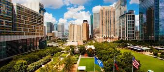
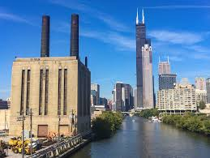

|  |
Houston (Listeni/ˈhjuːstən/ HYOO-stən) is the most populous city in the state of Texas and the fourth-most populous city in the United States. With a census-estimated 2014 population of 2.239 million[5] within an area of 667 square miles (1,730 km2),[6] it is also the largest city in the southern United States[7] and the seat of Harris County. Located in Southeast Texas near the Gulf of Mexico, it is the principal city of the Greater Houston metro area, which is the fifth-most populated MSA in the United States. Houston was founded on August 28, 1836, near the banks of Buffalo Bayou (now known as Allen's Landing)[8][9] and incorporated as a city on June 5, 1837. The city was named after former General Sam Houston, who was president of the Republic of Texas and had commanded and won at the Battle of San Jacinto 25 miles (40 km) east of where the city was established. The burgeoning port and railroad industry, combined with oil discovery in 1901, has induced continual surges in the city's population. In the mid-20th century, Houston became the home of the Texas Medical Center—the world's largest concentration of healthcare and research institutions—and NASA's Johnson Space Center, where the Mission Control Center is located.[10]
 |
||
Los Angeles (Listeni/lɒs ˈændʒəlᵻs/,[14] Spanish for "The Angels"; Spanish pronunciation: [los ˈaŋxeles]), officially the City of Los Angeles and often known by its initials L.A., is the cultural, financial, and commercial center of Southern California. With a U.S. Census-estimated 2016 population of 3,976,322,[15] it is the second-most populous city in the United States (after New York City) and the most populous city in the state of California. Located in a large coastal basin surrounded on three sides by mountains reaching up to and over 10,000 feet (3,000 m), Los Angeles covers an area of about 469 square miles (1,210 km2).[7] The city is also the seat of Los Angeles County, the most populated county in the country. Los Angeles is the center of the Los Angeles metropolitan area, and is part of the larger designated Los Angeles-Long Beach combined statistical area (CSA), the second most populous in the nation with a 2015 estimated population of 18.7 million.[16]
|  |  |
Chicago (Listeni/ʃᵻˈkɑːɡoʊ/ or /ʃᵻˈkɔːɡoʊ/), officially the City of Chicago, is the third-most populous city in the United States. With over 2.7 million residents, it is also the most populous city in both the state of Illinois and the Midwestern United States. It is the county seat of Cook County. The Chicago metropolitan area, often referred to as Chicagoland, has nearly 10 million people and is the third-largest in the U.S. Chicago has been called a global architecture capital.[5][6] In terms of wealth and economy, Chicago is considered one of the most important business centers in the world.[7]